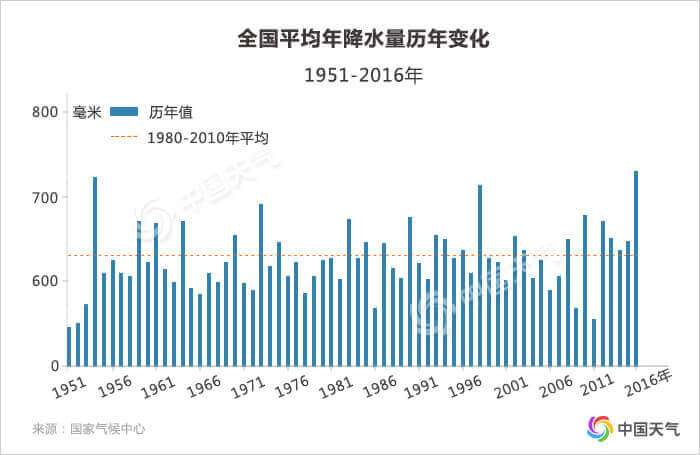

前 言
中国大部分地区处于季风气候区，尤其是东部平原地区，最热的时候正是雨水最丰沛的季节。雨热同期的气候一方面为我国农业发展提供了非常有利的自然环境，另一方面气候突变带来的旱涝灾害又会严重制约农耕文明的发展。
从远古时期，中国人就与旱涝做斗争。经常交替出现的洪涝灾害与旱灾，一直是我国面临的主要灾害。
我们搜集、整理了《中国近五百年旱涝分布图集》等历史资料，从中梳理出1470至2017年间的旱涝数据，试图用可视化的形式，展示548年来我国经历的旱涝气候变化规律，挖掘那些重大旱涝灾害事件及社会历史影响，从而为当代社会应对旱涝灾害提供借鉴。
-
重庆奉节招待所墙上所刻“同治九年（1870年）季夏洪水至此。光绪九年仲秋立。”，说明当时洪水之大。（来源：《中国历史大洪水》）
-
1929年香港旱灾，市民在街头轮流取水。（来源：中国气象灾害大典）
-
 1931年，长江流域发生大洪水。图为武汉城水灾情况。（来源：中国气象灾害大典）
1931年，长江流域发生大洪水。图为武汉城水灾情况。（来源：中国气象灾害大典） -
1942年夏到1943年春，河南发生大旱灾，夏秋两季大部绝收，饥荒遍及全省110个县。图片为河南灾区逃荒的饥民。（美国记者拍摄）
-
1954年长江中下游特大洪灾导致湖南、湖北、江西、安徽、江苏受灾人口1888万人，京广铁路100天不能正常通车。图为加固加高后的汉口沿江防水墙。（来源：中国气象灾害大典）
-
1972年中国发生大旱，全年受旱面积3069.93公顷，北京、河北、山西、辽宁、吉林等8省市91座大型水库蓄水量较1971年减少100.43亿立方米。（来源：中国气象灾害大典）
-
1975年8月，河南省南部淮河流域出现特大暴雨，导致60多座水库溃坝，近1万多平方公里受灾。图为京广铁路遂平段被洪水冲毁。（来源：中国气象灾害大典）
-
1981年7月15日洪水中的四川南充城。（来源：《中国历史大洪水》）
-
1983年夏天，陕西、四川、山西等省出现大暴雨，造成山洪暴发，汉江、渠江、嘉陵江等江河水位猛涨。其中，汉江安康河段洪水来势凶猛，洪水超过安康城堤1-2米。图为8月1日，安康老城区大桥以南至油厂地段因洪水变为废墟。（来源：中国气象灾害大典）
-
1998年长江、嫩江、松花江发生全流域型特大洪水，直接经济损失达1660亿元。图为8月10日江西九江江洲大堤上灾民抱着女儿寻找“家”。（来源：东方IC）
-
2006年夏，川渝高温干旱造成农作物受旱面积达320多万公顷，粮食减产500万吨。图为8月13日，旱情严重的四川省遂宁市大英县儿童在干涸的池塘里玩耍。（来源：新华网）
-
2010年，贵州省持续干旱造成黄果树大瀑布大“瘦身”，漂流景区水位也大幅度下降为平时的1/4左右。（来源：人民网)
-
2012年7月21日，北京暴雨疯狂肆虐，雨量历史罕见。全市受灾人口达190万人，其中79人遇难。图为一辆双层公共汽车被积水围困于莲花桥附近。(来源：新华网)
-
2013年8月，东北发生严重洪涝灾害，合计受灾1030万人，直接经济损失591亿元。图为中国最东端的抚远气象站被洪水围困。（来源：中国天气网）
-
2016年5月4日以来，江南、华南及西南地区东部等地遭受暴雨洪涝危害。图为7月4日，安徽省太湖县新仓镇呜山村村民房屋被洪水淹没。（来源：新华网）
我们发现，在这段距当代社会最接近也是社会变革最剧烈的一段历史中，不管社会形态经历几度变迁，旱涝总是在或多或少影响着农耕文化为核心的中华文明，例如朝代更替、人口迁移等。 旱和涝依然是我们无法回避的重要自然灾害。
格局：旱涝交替
中国地貌复杂，范围跨度大，各地年降水量季节分配很不均匀，雨季集中在5到10月，这几个月的降水一般占全年总降水量80%左右，其多寡本基本会决定当年旱涝状况。
548年来，中国可谓旱涝频发，几乎每年都有区域性或局地性的旱灾或涝灾。
1470（明朝）-2017年中国旱涝演变历程
- 大涝
- 涝
- 正常
- 旱
- 大旱
分布不均的降水造就了多样的旱涝分布格局。我国旱涝格局通常有6种类型，即全国旱、全国涝、南北方涝长江流域旱、南北方旱长江流域涝、北方涝南方旱、北方旱南方涝等。总的来说，全国涝多于全国旱，北旱南涝多于北涝南旱型，长江流域涝多于旱。
我国旱涝格局中最常见的是“北旱南涝”格局，大约平均每4年就可能出现一次，也就是说大多年份南方易偏涝，北方偏旱。容易发生涝灾的地区主要集中在东部地区尤其是长江中下游及以南地区，旱灾最易发生在华北平原及西北的陕甘宁地区。
而最少见的是“北涝南旱”格局，大约平均每9年一次，17和18世纪就曾出现过。例如，清朝乾隆年间的1756-1757年多雨地区向北移动，导致北方持续多雨，连续2年“北涝南旱”格局的状况在历史上更为少见。
新中国成立后，我国气候总体维持“北旱南涝”格局，华北、东北东南部及西北东部降水持续偏少，长江流域洪涝灾害增多。不过，西北部干旱、半干旱地区近30年来降水持续增加，日渐呈现“暖湿化”倾向。
旱涝不均跟我国地域辽阔且季风气候年际变率大有密切关系。夏季风的异常变动会直接导致中国汛期降水的时空差异。当夏季风较弱时，雨带长期在南方徘徊，导致雨季长，雨量大，可能形成涝灾，同时造成北方雨季短，雨量少，可能形成旱灾。这时就会出现北方偏旱、南方偏涝情况。反之，则会造成南方偏旱、北方偏涝。
趋势：旱涝转换
我国的旱涝格局并非一成不变，呈现准周期或者阶段性交替变化，每隔一段时间就会发生转换。尤其是东部区域旱涝变化的准周期性更加明显，大部地区周期为3年左右，而部分地区则会维持更长甚至百年左右的“世纪周期
1470年以来，我国的旱涝分布几经突变。1470年至17世纪，中国偏旱和偏涝的年份都非常多，但以旱型年景为主，自东向西大致呈“东旱-中涝-西旱”带状分布；到了17世纪末至18世纪初，由旱转涝显著；19世纪期间，年景以涝型为主，出现几次持续时间较长的水灾；20世纪以后，全国逐渐向旱型年景转变，40年代中期至60年代中期较为湿润，80年代起再次转旱，其中华南和淮河流域及华北平原偏旱，长江以南和西北东部偏涝。
虽然在过去五百年间有过多次干湿气候突变，但建国以来的1951-2010年，年降水量总体未出现显著变化趋势。从总体来说，最近的60年属于气候条件较好、相对稳定的时期，但仍需要警惕未来出现气候突变和重大气候灾害的可能性。
据《第三次气候变化国家评估报告》预测，到本世纪末，中国仍将持续降水变多的趋势。全国降水平均增幅为2%-5%，北方降水可能增加5%-15%，华南地区降水变化不显著。
降水多寡的突变对农业生产的影响巨大，往往直接导致粮食歉收甚至绝产，进而引发社会问题。例如，1644年，明朝灭亡北方各区结束了多年持续的干旱后，全国大部地区急速跃变转入持续多雨的状态，出现旱涝急转，加剧了明末大旱导致的灾情加剧。
影响：水旱中国
旱灾和涝灾历来是影响中国最严重的自然灾害，他们发生频率高，据《历史时期中国重大自然灾害时空分异特征》统计分析，从公元前180年到1911年统计发生的重大自然灾害共计190次，其中旱灾和水灾就达到84次。
旱涝灾害对长期以农业为主“靠天吃饭”的社会影响极大，往往直接导致农业减产或绝收，进而出现蝗灾、河道变迁等次生问题。如果灾害连年，则灾荒会进一步加重，甚至影响社会变迁或朝代更替。中国历史上多次发生的农民起义，很多是以旱涝导致的灾荒为背景。
旱涝对人类社会的伤害各有不同。
旱灾的致命性在于破坏力强、时间长且范围广泛，经常会造成大片绝产绝收，特大型灾荒往往是由持续干旱制造的。
明清时期旱灾多发且致灾重，多次出现连续3年以上、干旱区域超过4个省份以上的重大干旱事件。
尤为显著的是明朝万历年间（1585-1590年）6年大旱、明朝崇祯年间(1637—1643年）7年全国大旱、清朝乾隆年间（1784-1788年）5年旱灾和清朝光绪初年（1875—1878年）的“丁戊奇荒”大旱灾。
这些严重的自然灾害导致剧烈的社会动荡，以1637-1643年发生的长达7年的全国大旱为例，这场波及南北23个省份的苦旱导致赤地千里，江河断流，泉井涸竭，禾苗干枯，颗粒无收，甚至发生人吃人的惨剧。灾荒成为农民起义的导火索，内忧外患之下明王朝走向灭亡。中国科学院地理科学与资源研究所研究员葛全胜认为，这可能是中国东部地区过去2000年最严重的一次持续性旱灾。
同样，“丁戊奇荒”也引发了社会变革，迫使大批山西百姓背井离乡北上内蒙古，河北、山东饥民大量逃荒至产粮较丰的东北，这就是中国近代史上大规模的灾民迁徙潮“走西口”和“闯关东”，并持续至20世纪初。
与大范围、持续性强的旱灾相比，水灾的特点在于其频繁。548年来，全国没有一年未出现大涝，有的范围大，有的局地性明显。
所以虽然洪灾几乎年年都有，但影响严重的主要集中在几个特大水涝年，较为典型的有年份有1730、1755、1823、1931、1935、1954、1975、1998、2016年等。
1998年爆发的百年不遇特大洪水就对经济社会造成极大危害。当时，长江、嫩江、松花江等江河同时洪水泛滥，长江上游出现8次洪峰，与中下游洪水遭遇，形成全流域型大洪水；嫩江、松花江出现150年来最严重的全流域特大洪水。洪灾造成29个省份的4150人死亡，直接经济损失2551亿元，灾害之严重，至今令人不寒而栗。

总的来说，新中国成立以来，随着基础设施建设的进步以及预报手段和防灾减灾水平的提升，人类对旱涝和洪灾等气象自然灾害的抵抗能力明显增强。因旱涝灾害造成的人员伤亡数不断下降，且当代社会并未引发像古代那样的社会动荡和人口迁移。据统计，旱涝等气象灾害导致的死亡人数从20世纪80和90年代平均每年5000人降至21世纪的2000人左右。
但是不容忽视的是，随着工业社会发展、城市化进程的推进，旱涝灾害所造成的经济影响更为严重。1965-1989，旱涝等气象灾害导致的平均直接经济损失（2013年价格）为1192亿元，而1990-2013年，这一数字蹿升至3079亿元，翻了2.6倍。气象灾害造成直接经济损失绝对值呈上升趋势。在气候灾害中，洪涝灾害造成的直接经济损失占气候灾害经济损失的比重最大。
1950-2016洪涝灾情统计
- 受灾面积
- 因灾死亡人口
- 直接经济损失
1950-2016旱灾情统计
- 受灾面积
- 粮食损失
- 直接经济损失
- 饮水困难人口
成因：季风和地形
在我国，旱涝频发与复杂而特殊的气候和地理环境有密切关系。
我国东部地区是全球最典型的的季风区之一，其中夏季风对旱涝有显著的影响。夏季风有明显的季节性北进和南退，在5月中旬和6月上旬影响华南地区，6月中旬北跳至长江中下游一带，在那里维持至7月中旬，然后再次北跳，影响华北和东北地区。8月下旬开始，夏季风开始从北方迅速撤退至长江流域，在9月上旬回到南海北部地区，完成一次夏季风南北向的季节进退过程。
夏季风来临的早晚、强度大小，向北推进的程度在年与年之间有显著差异。夏季风的这种年际变化造成了每年季节性大雨带，在雨带长期持续的地区降水过多，容易发生暴雨洪涝灾害，反之，易于发生干旱灾害。一般来说，夏季风强，大雨带能推至较北位置，使北方地区发生洪涝灾害而南方发生旱灾，若夏季风若，则北方易旱南方易涝。
此外，我国地形十分复杂，高原盆地错落，高山河川纵横，气候类型复杂多样。高大的山脉往往成为气候的分界线，山地以及四川盆地四周和太行山等地的迎湿风一侧都是多暴雨的地带。同时，西部地区深入亚欧大陆腹地，来自海洋的水汽难于到达这一地区，是干燥的大陆性气候区，从而导致我国旱涝地区间差异极大。